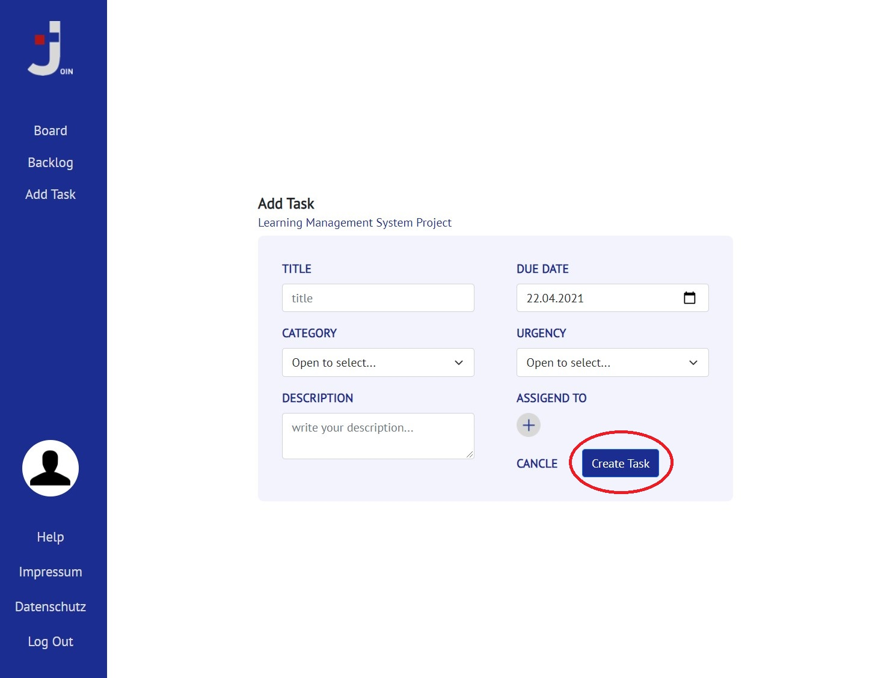
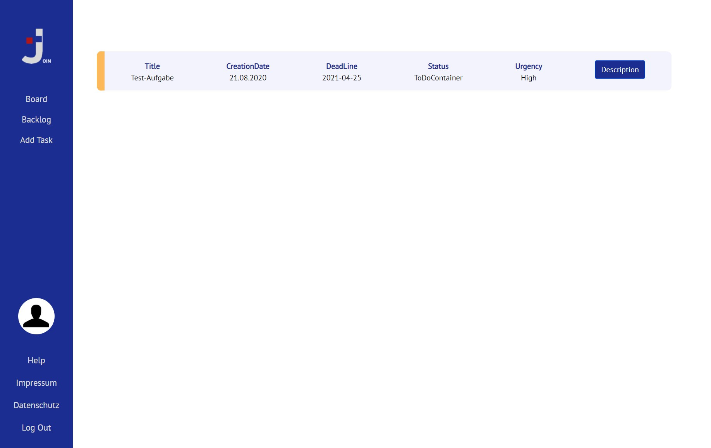
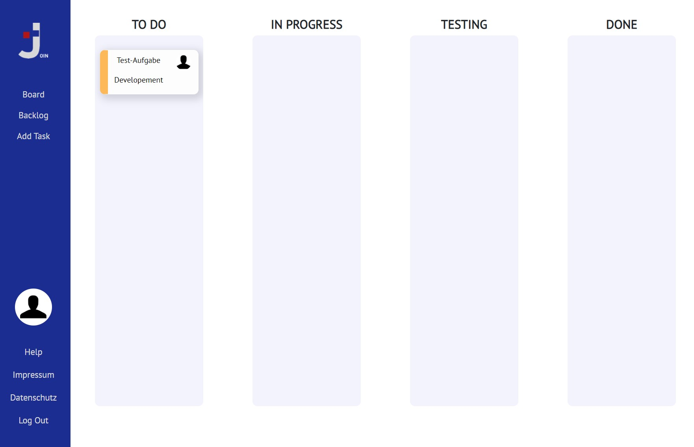

JOIN Einführung
Erlernen Sie in einfachen Schritten wie JOIN funktioniert und Ihnen das organisatorische Arbeitsleben erleichtern kann!
1. Add Task

- Erstellen Sie Ihren Task
- Unter Urgency können Sie auswählen wie hoch die Dringlichkeit dieser Aufgabe ist
- Unter Assigend To können Sie die Aufgabe jemand Bestimmten zuordnen
- Klicken Sie anschließen auf Create Task um Ihren Task zu erstellen
2. Backlog

- Im Backlog befinden sich alle erstellten Tasks
3. Board

- Im Board kann man den Task nun beliebig verschieben
- So hat man einen guten Überblick, an welchem Task gerade gearbeitet wird
Viel Freude beim Arbeiten mit JOIN!!